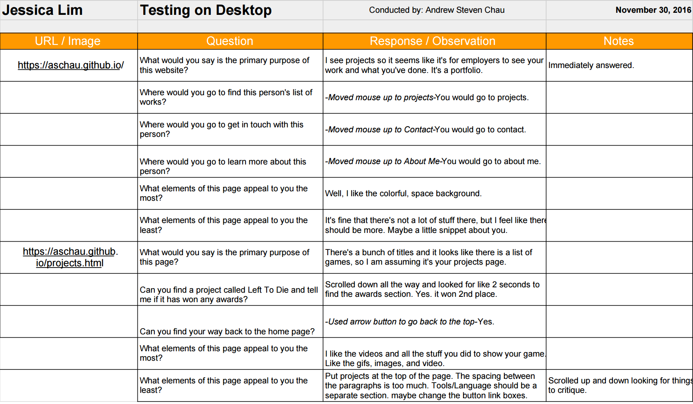
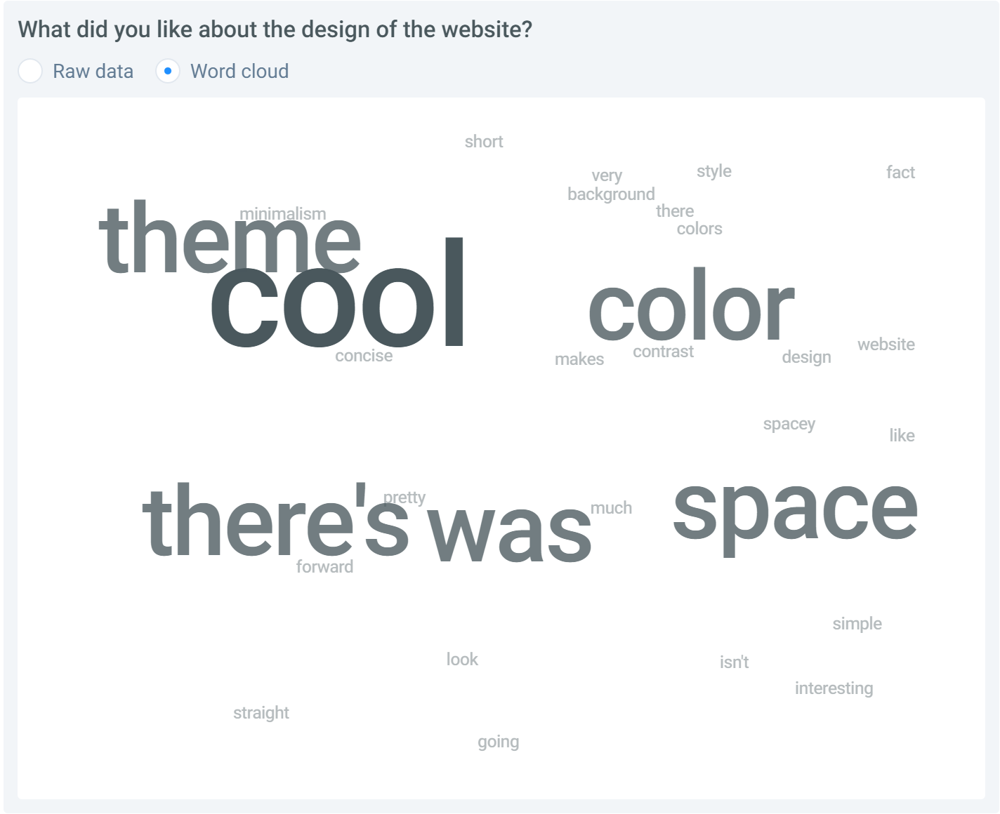
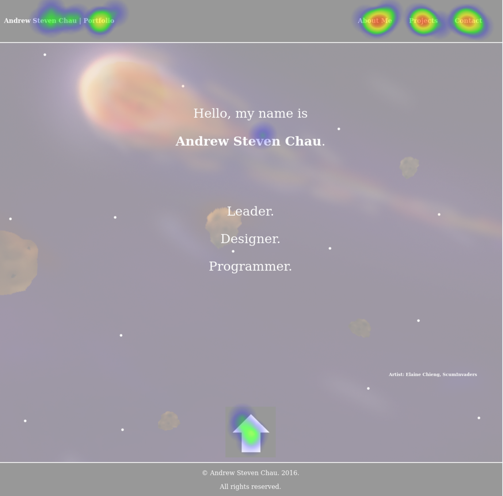

Projects
Monochrome Memories (Current)


- Team Roster:
- Andrew Steven Chau - Project Manager/Lead Programmer
- Elaine Chieng - Artist/Designer
- Tiffany Lam - Designer/Programmer
- Jessica Lim - Sound
- Description:
- Current project for my senior capstone course at the University of California, Irvine.
A puzzle platformer game that incoporates cards to interact with objects in the environment.
Portfolio Website (Nov 2016)
- User Research
- User Interviews:
User interviews are important in order to to get a gauge of what people expect out of your product. It helps to interview a variety of stakeholders to get different viewpoints and to make sure you don't miss out on any possible users. Types of questions should concern both short and long term goals to understand what exactly they expect out of your project. I ended up interviewing 3 other students at UCI in order to see where their goals aligned compared to mine and to get an insight as to what I should put onto my portfolio.
- Competitor Analysis:
It is extremely important to do a competitor analysis, especially for a portfolio, because the entire goal is to try to stand out and be better than the rest. It is an evaluation to see what competitors are doing, how they're doing it, and what's working versus what's not working. I chose to analyze three different portfolio websites. One was another student's in order to see what someone that was within my level of experience was showcasing on their website. I chose another one based on the fact that they had been in the gaming industry for years and that's where I aiming to be. The last one I chose was someone has had some general experience in the technology field in order to still also figure out how to appeal to companies other than game ones.
- Feature Value Matrix:
A feature value matrix is used to prioritize the features that you want to add to your project. You list the features that you potentially want to add and then give them scores based on their business value, user value, and technical effort. I chose features that I noticed that other portfolios tended to have and certain ones that I wanted to add previously, but didn't get the chance to.
- Feature Prioritization:
I made a visual to display the order that I prioritized the features that I wanted to implement. The order is based purely on the feature value matrix and not my own personal preference. I feel like this visual is extremely helpful in building my interface as it clearly display what features I should focus on next and why I should I add them.
- User Testing
- User Stories:
User stories help to focus on specific sets of features to make sure that they're catering to the user experience. They make the creator of the product think of the processes that different users will have to go through and why. By doing so, we can better design features to make this process easier or more efficient. I chose my user stories based on both new features I wanted to implement and existing ones to make sure that they would actually improve my interface or verify that they're beneficial to the user experience.
- Cognitive Walkthrough:
- 
A cognitive walkthrough is a process in which the designer has a user go through the basic uses of their project. It is important to do these because it ensures that users know how to use the interface without outside guidance and that they're doing it efficiently. If the user has to ask questions to get through a task that they're given, then something is not being correctly communicated to the user. Some challenges that usually come up while conducting walkthroughs are not anticipating some of the issues that specific features or design decisions would cause. The designer simply assumes that their interface is good because they themselves know how it works, but they might've actually made it overly complicated. The tasks for the walkthrough themselves may have also been poorly put together which might confuse the user further.
- User Test:
- 
This is the first test that I created for my website. I wanted to make sure I was giving off the right impression when users first entered my website from the home page. I asked questions about what they thought the website was about based purely on the home page to make sure I was making my intentions clear. I also asked questions about what they liked about the design of the page versus what they didn't like. The results were generally the same across the board. All testers knew immediately what the website was meant to display. As for the design, most people liked the simplicity of the page and the atmosphere it gave. The flaw that testers pointed out was that the design as whole didn't work in combination that well with each other, such as the font and the background.
- 
The second test I created was a click test to make sure that users were able to actually able to navigate through the website without my guidance. It tested whether or not they could tell what was clickable versus what wasn't, such as the links on the navigation bar. The tests went well and mostly everyone understood the functionality of the navigation and the scrolling arrow. The tests also revealed that users tried to click the bold text I displayed for my name, as they thought it would lead them to information about me.
- Summary of Findings
Overall, the user research and user testing was extremely helpful and I now understand why it is so important to do these tasks. The user interviews helped give me a kickstart as to what I should focus on for my website. I highlighted the main things that seemed to parallel the most between the interviews and incorporated those ideas into my website. Analyzing my competitors was also immensely helpful as it's always useful to pull ideas from other similar projects and figure out a way to incoporate it into yours. It helped me figure out what I liked and didn't like in a portfolio as well as avoid any issues I noticed in other websites. As for the feature value matrix and feature prioritization, I realized that certain features that I wanted to add were actually lower in priority than the other that I put down that I noticed in other people's websites. it's immensely helpful to actually write it out and visually see what you should do next versus just planning things out in your head.
As for the user stories, I felt like it gave the features I wanted to implement a lot more meaning. It emphasized exactly why those features were so important to add and how it improved the user experience. The cognitive walkthrough helped me confirm that the features I was adding made sense and was easily accessible and efficient to go through. The user testing highlighted the flaws in my design as well as confirm the design choices I was on the fence about keeping. I feel like user tests will usually always be the place that you'll make the most progress through the entire process of design as you'll actually be able to see your decisions in action and see if they were actually good or not.
Overall, I found the entire process illuminating and look forward to doing more testing after I implement the features that I developed based on the information.
- Incorporation of Findings
I have already actually incoporated a couple of my findings into my website. One of the major things that people pointed out was the inconsistency between the font I originally used (Tahoma) with the rest of the website. It didn't really fit the space like theme of the background, so that was the first thing I set out to change.
Scallywags (May 2016)

- Team Roster:
- Andrew Steven Chau - Project Manager/Designer
- John Francis Collins III - Designer/Artist
- Andres Jr. Gonzalez - Designer/Artist
- Zhengyuan Huang - Tester
- Kinsey Rose Lynaugh - Designer/Artist
- Bingchen Yu - Tester
- Description:
- You are a pirate and your ship has crashed! The remaining crew suspects the captain has met with Davy Jones at the bottom of the sea. A new captain must be elected. You know that if you impress your fellow crew mates then surely they will vote for you as the new captain! Play with up to three other scallywags to decide which one of you is worthy to be the next captain of the ship!
Spooky Spoils (April 2016)
- Team Roster:
- Andrew Steven Chau - Project Manager/Designer/Programmer
- Edwin Andrew Ho - Lead Programmer/Designer
- Harvey Limbo - Sound/Artist
- Shaun Reid - Writer
- Wesley Tseng - Artist
Made with Unity using C#.
Incorporates eye tracking software and hardware: Tobii EyeX.
- Description:
- A game in which the player has to use their eyes to interact with the environment to solve puzzles.
Play as a dashing young explorer hoping to obtain treasure from a haunted house.
Awards:- "Best Game Design" - VGDC 2016 Spring Game Jam
- "Award for Creativity" - 2016 IEEE Gamesig
- Links:
Currently unavailable at this time.
ScumInvaders (March 2016)

- Team Roster:
- Andrew Steven Chau - Project Manager/Lead Programmer
- Elaine Chieng - Artist
- Tiffany Lam - Designer/Programmer
- Jessica Lim - Sound
- Monami Yang - Artist/Programmer
Made with Python using Pygame.- Uses TCP networking and sqlite3.
- Description:
- A bullet hell style game using the basic mechanics from Space Invaders.
Networked multiplayer game with a lobby system. Up to four players per room.
Going Home (Jan 2015)
- Team Roster:
- Andrew Steven Chau - Project Manager/Designer/Programmer
- Max R. Chung - Artist/Sound/Programmer/Designer
- Khai Nguyen - Programmer
- Faye Yueh Jao - Programmer
Made with Python using Pygame.
- Description:
- A side view strategy resource game similar in design to FTL: Faster Than Light.
- Try to make it home with your solar powered ship without being destroyed by tentacles.
Left To Die (Jan 2015)
- Team Roster:
- Andrew Steven Chau - Designer/Programmer
- Max R. Chung - Project Manager/Programmer/Artist
- Kinsey Lynaugh - Programmer/Designer
- Hector Martinez - Programmer
Made with Python using Pygame.
- Description:
- A puzzle platformer in which the player has to switch between two inverted worlds in order to make it to the end.
When switching worlds, every regular block becomes a spike block and every spike block and regular block.- Players' scores are determined by how many lives they have at the end of the game.
Awards:- 2nd Place - VGDC 2015 Winter Game Jam